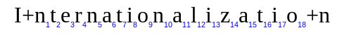
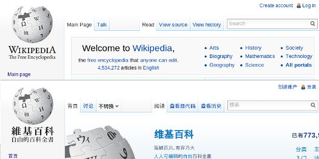
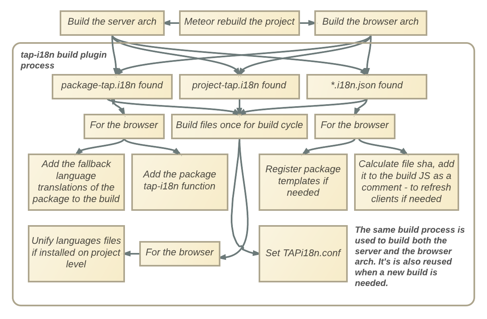

Internationalization - i18n


tap-i18n - i18n for Meteor
- Readable Syntax
- Advanced i18n
- All Encompassing
- Transparent Namespacing
- Ready to Scale
Readable Syntax
page.html
{{_ "click"}}
en.i18n.json
{
"click": "Click Here"
}
Result
Click Here
Advanced i18n - sprintf
page.html
{{_ "hello" "Daniel" "2014-05-22"}}
en.i18n.json
{
"hello": "Hello %s, your last visit was on: %s"
}
Result
Hello Daniel, your last visit was on: 2014-05-22
Advanced i18n - Named Variables
page.html
{{_ "hello" "2014-05-22" user_name="Daniel"}}
en.i18n.json
{
"hello": "Hello __user_name__, your last visit was on: %s"
}
Result
Hello Daniel, your last visit was on: 2014-05-22
Advanced i18n - Singular/Plural + Count
page.html
{{_ "inbox_status" "2014-05-22" username="Daniel" count=1}}
{{_ "inbox_status" "2014-05-22" username="Chris" count=4}}
en.i18n.json
{
"inbox_status": "__username__, You have a new message (inbox last checked %s)",
"inbox_status_plural": "__username__, You have __count__ new messages (last checked %s)"
}
Result
Daniel, You have a new message (inbox last checked 2014-05-22)
Chris, You have 4 new messages (last checked 2014-05-22)
Advanced i18n - Context
page.html
{{_ "actors_count" count=1 context="male" }}
{{_ "actors_count" count=2 context="female" }}
en.i18n.json
{
"actors_count": "There is one actor in the movie",
"actors_count_male": "There is one actor in the movie",
"actors_count_female": "There is one actress in the movie",
"actors_count_plural": "There are __count__ actors in the movie",
"actors_count_male_plural": "There are __count__ actors in the movie",
"actors_count_female_plural": "There are __count__ actresses in the movie",
}
Result
There is one actor in the movie
There are 2 actresses in the movie
Advanced i18n - Dialects Support
Auto fallback:
- Language dialect, if specified ("pt-BR")
- Base language ("pt")
- Base English ("en")
All Encompassing
- Projects developers' needs are not the same as package developers'.
- Tap-i18n provides specific tools for project and package developers.
- Total coverage and seamless integration into the Meteor package ecosystem.
Transparent Namespacing
You don't need to worry about domain prefixing or package conflicts when you translate your project or package. Behind the scenes we automatically generate scoped namesapace for you.
Ready to Scale
- Translations are unified into a single JSON file per language that includes both package and project-level translations
- On-demand: translations are loaded only when they are needed
- 3rd Party CDN Support
Meteor Packages
- Meteor's units of reusability
- Simply a directory with a package.js file in it
- Explicitly list all of their source files and load order
- Have their own package namespace: variables used without var available on all the package's files
deps - package.js
Package.on_use(function (api) {
api.export('Deps');
api.add_files('deps.js');
api.add_files('deprecated.js');
});
tap-i18n - package.js
Package.on_use(function (api) {
api.use(["coffeescript", "underscore", "meteor"], ['server', 'client']);
api.use(["http-methods"], 'server');
api.use(["deps", "session", "jquery", "templating"], 'client');
// load and init TAPi18next
api.add_files('lib/tap_i18next/tap_i18next-1.7.3.js', 'client');
api.export("TAPi18next");
api.add_files('lib/tap_i18next/tap_i18next_init.js', 'client');
// load TAPi18n
api.add_files('lib/globals.js', ['client', 'server']);
api.add_files('lib/tap_i18n/tap_i18n-common.coffee', 'server');
// We use the bare option since we need TAPi18n in the package level
// and coffee adds vars to all (so without bare all vars are in the
// file level)
api.add_files('lib/tap_i18n/tap_i18n-common.coffee', 'client',
{bare: true});
api.add_files('lib/tap_i18n/tap_i18n-server.coffee', 'server');
api.add_files('lib/tap_i18n/tap_i18n-client.coffee', 'client',
{bare: true});
api.export("TAPi18n");
});
Meteor Build Plugins
- Allow us to perform special procedures for specific file types
- Allow us to generate js and css that will be part of the project build
Defined in package.js, but they are actually:
- Fully-fledged Meteor programs in their own right
- Have their own namespace, package dependencies, source files and npm requirements
Less Build Plugin
package.js
Package._transitional_registerBuildPlugin({
name: "compileLess",
use: [],
sources: [
'plugin/compile-less.js'
],
npmDependencies: {"less": "1.6.1"}
});
Less Build Plugin
plugin/compile-less.js
Plugin.registerSourceHandler("less", function (compileStep) {
//
// compilation code
//
compileStep.addStylesheet({
path: compileStep.inputPath + ".css",
data: css,
sourceMap: sourceMap
});
});;
// Register import.less files with the dependency watcher, without actually
// processing them. There is a similar rule in the stylus package.
Plugin.registerSourceHandler("import.less", function () {
// Do nothing
});
// Backward compatibility with Meteor 0.7
Plugin.registerSourceHandler("lessimport", function () {});
tap-i18n Build Plugin
package.js
// Register our build plugin
Package._transitional_registerBuildPlugin({
name: "compileI18n",
use: ["coffeescript", "meteor", "simple-schema", "check", "templating"],
sources: [
'lib/globals.js',
'lib/plugin/wrench.js',
'lib/plugin/language_names.js',
'lib/plugin/compile-i18n.coffee'
]
});
tap-i18n Handlers Registration
Plugin.registerSourceHandler "i18n", (compileStep) ->
...
Plugin.registerSourceHandler "package-tap.i18n", (compileStep) ->
...
Plugin.registerSourceHandler "project-tap.i18n", (compileStep) ->
...
Plugin.registerSourceHandler "i18n.json", (compileStep) ->
...
tap-i18n the Build Process

The Template Namespace Challenge
- All the templates in a meteor project are added to the same Template object
- Templates in the Template object don't indicate which package indroduced them
- How do you tell which package a template belongs to?
The Template Namespace Challenge
Package.on_use(function (api) {
api.use(["tap-i18n"], ["client", "server"]);
// You must load your package's package-tap.i18n before you load any
// template
api.add_files("package-tap.i18n", ["client", "server"]);
// Templates loads (if any)
// You must load the languages files after you load your templates -
// otherwise the templates won't have the i18n capabilities (unless
// you'll register them with tap-i18n yourself, see below).
api.add_files([
"i18n/en.i18n.json",
"i18n/fr.i18n.json",
"i18n/pt.i18n.json",
"i18n/pt-br.i18n.json"
], ["client"]);
});
Build Plugins Pitfalls
- If you want to register a plugin for the xxx.a.b extension, you must first register a plugin for xxx.b
- Build plugins must be synchronous
- Clients refresh only if the build content changed
Testing Build Plugins with Configurable Build Options - Live Overview
Fork me on GitHub!
TAPevents/tap-i18n
The development of tap-i18n supported by TAPevents.com
Daniel Chcouri / theosp.github.io